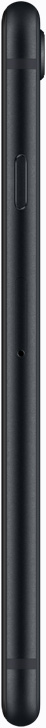
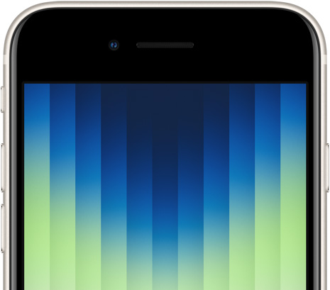

A15 Bionic enhances nearly everything you do. Apps load in a flash and feel so fluid.
Faster downloads.
Faster streaming.
Faster gaming.
Less lag.
More fun
From livestreaming to multiplayer gaming to video sharing, 5G really speeds things up. It even makes FaceTime in high definition and SharePlay feel smooth and seamless when you’re on the go. When you don’t need all that speed, iPhone SE shifts into Smart Data mode to preserve battery life.4

Cool with
spills.

Thanks to incredible water resistance.
iPhone SE shrugs off spills from common liquids such as water, soda, coffee, tea, and juice. And it’s certainly not bothered by a little dust, either.
Smart stuff happens
between snap and shot.
The A15 Bionic chip does all kinds of
computations behind the scenes to
make your photos look great.
For example, Smart HDR 4 automatically refines the contrast, lighting, and skin tones for up to four people — so everyone looks their best.
And in mid to low light, Deep Fusionstudies multiple exposures pixel by pixel to capture the subtlest details, textures, and patterns in your final shot.